???
| R0 | R1 | R2 | R3 | G0 | G1 | G2 | G3 |
| 0 | 0 | 0 | 0 | 0 | 0 | 0 | 0 |
| 0 | 0 | 0 | 1 | 0 | 0 | 0 | 1 |
| 0 | 0 | 1 | 0 | 0 | 0 | 1 | 0 |
| 0 | 0 | 1 | 1 | 0 | 0 | 1 | 0 |
| 0 | 1 | 0 | 0 | 0 | 1 | 0 | 0 |
| 0 | 1 | 0 | 1 | 0 | 1 | 0 | 0 |
| 0 | 1 | 1 | 0 | 0 | 1 | 0 | 0 |
| 0 | 1 | 1 | 1 | 0 | 1 | 0 | 0 |
| 1 | 0 | 0 | 0 | 1 | 0 | 0 | 0 |
| 1 | 0 | 0 | 1 | 1 | 0 | 0 | 0 |
| 1 | 0 | 1 | 0 | 1 | 0 | 0 | 0 |
| 1 | 0 | 1 | 1 | 1 | 0 | 0 | 0 |
| 1 | 1 | 0 | 0 | 1 | 0 | 0 | 0 |
| 1 | 1 | 0 | 1 | 1 | 0 | 0 | 0 |
| 1 | 1 | 1 | 0 | 1 | 0 | 0 | 0 |
| 1 | 1 | 1 | 1 | 1 | 0 | 0 | 0 |
真理値表より、
G0 = R0
G1 = ¬R0 * R1
G2 = ¬R0) * ¬R1 * R2
G3 = ¬R0 * ¬R1 * ¬R2 * R3
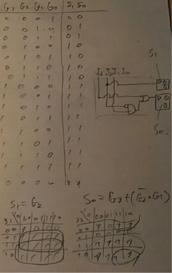
以上のエンコーダーとDフリップフロップ回路の組合せを利用する。
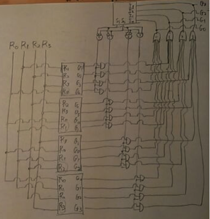
状態S1S0
00:初期状態
01: Aが１回
10: Aが２回連続
11: Bが１回
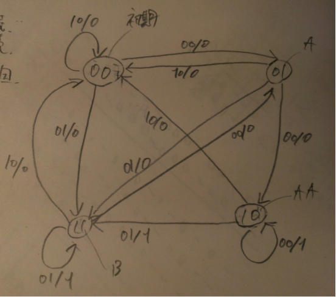
上記ミーリーグラフをもとに真理値表を作成し、カルノー図を使って簡単化。
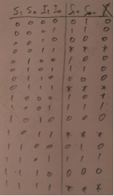
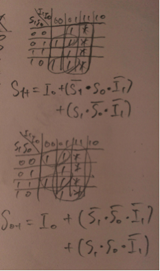
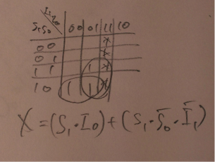
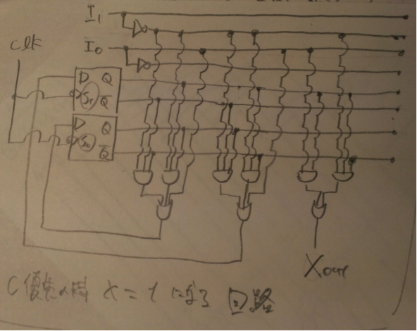
次にABCのうち、どの入力を受け付けるかを選択する回路を作成。
入力Xが１の時かつCに入力がある場合はCを優先させる。
出力O1O0
00:A 01:B 10:C とする。
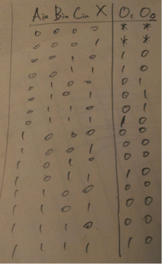
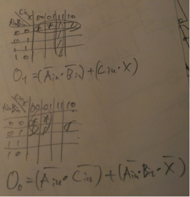
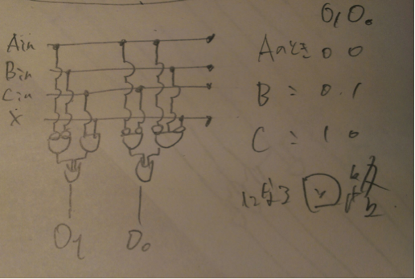
以上の回路を組み合わせると、
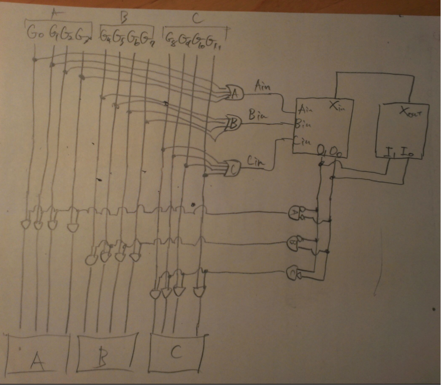